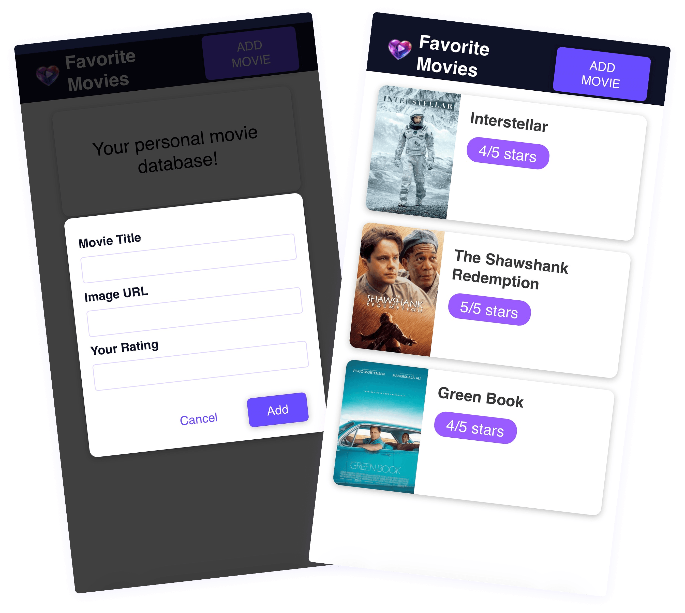
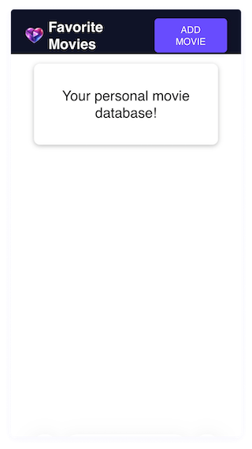

Favorite Movies Web App
Built using HTML, CSS, and JavaScript
Favorite Movies is a lightweight web application that allows users to create and manage a personal list of movies they love. The goal of this project was to build a clean, intuitive interface while strengthening my JavaScript fundamentals, particularly around DOM manipulation, event handling, and local data persistence.
Problem
Users often save movies in scattered places (notes, screenshots, or memory), which creates friction when they want to revisit or organize their favorites.
The challenge was to design a simple, distraction-free experience where users can:
- Quickly add movies
- Visually scan their list
- Remove items effortlessly
- Keep their data even after refreshing the page
Solution
I designed and developed a minimal, user-friendly interface focused on clarity and speed. The app enables users to:
- Add a movie with title, image URL, and rating
- View all saved movies in a clean list layout
- Delete movies with a confirmation modal
- Persist data using localStorage, so the list remains after reload
The interaction design prioritizes simplicity: modal-based input, clear visual hierarchy, and instant feedback after each action.

Technical Implementation
Core Technologies:
- HTML5
- CSS3
- JavaScript
Key Concepts Applied:
- DOM manipulation (createElement, append, querySelector)
- Event handling & delegation
- Function binding (bind) for passing parameters
- State management using arrays
- Local storage (localStorage.setItem, getItem)
- Conditional UI rendering

Let’s work together
dziyanakantsevich@gmail.com
Software Developer
UI/UX Designer

Available worldwide